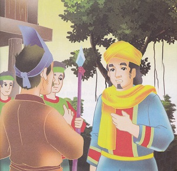
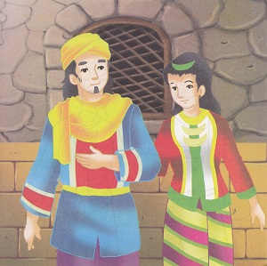

Tanduk Alam
( Cerita Rakyat Sulawesi Tengah )
Alkisah, pada zaman dahulu kala, ada seorang pemuka agama Islam dari negeri Palembang, Sumatera Selatan yang bernama Hasan Tanduk Alam. Suatu ketika, ia mengembara ke negeri Banggai, Sulawesi Tengah untuk berdagang dan menyebarkan agama Islam. Namun sebelum sampai ke negeri banggai, ia singgah dan menetap di Tanah Sea-Sea. Tanduk alam bekerja sebagai tukang emas dan membuat berbagai macan perhiasan.
Pada suatu hari, kalangan istana da seluruh rakyat negeri Banggai gempar, karena putri Raja Adi Cokro tiba-tiba hilang. Sang raja segera memerintahkan kepada seluruh bala tentara untuk mencari putrinya. Namun, setelah mencari ke seluruh penjuru Negeri Banggai, mereka tidak menemukan sang Putri. Mereka hanya mendengar kabar bahwa Putri Raja diculik oleh orang-orang Tobelo di Pulau Sagu atas perintah Raja Ternate yang ingin menguasai kerajaan Banggai.
Mereka pun meminta pertolongan kepada Tanduk Alam untuk menemukan Putri Raja. Tanduk Alam pun bersedia dengan syarat tidak perlu didampingi oleh pasukan dengan jumlah besar untuk menghindari jatuhnya banyak korban. Dalam perjalanan menuju pulau Sagu, mereka menyusun strategi untuk memasuki pulau dan mencari tempat dimana Putri di sekap.
Pada saat tengah malam, mereka pun sampai di Pulau Sagu. Tanduk Alam pun segera naik ke pulau itu. Saat menginjakkan kaki di Pulau Sagu, tanduk Alam segera duduk bersila sambil berdoa kepada Tuhan Yang Maha Esa. Beberapa saat kemudian, tiba-tiba ia menghilang. Betapa terkejutnya keempat basalo menyaksikan peristiwa itu dari atas perahu. Mereka takjub melihat kesaktian yang dimiliki oleh Tanduk Alam.
Tanduk alam menyelinap masuk ke tempat disembunyikannya Putri Raja. Sesampai ditempat itu, ia melihat Putri dikurung di dalam sebuah ruangan. Lalu ia mendekati sang Putri yang sedang tertidur dan segera membangunkannya. Alangkah terkejutnya sang Putri saat melihat seorang pemuda yang berjubah didekatnya. Tanduk alam pun menyuruh sang Putri untuk memejamkan matanya. Sesaat kemudian, keduanya pun menghilang dari ruangan itu. Tidak lama kemudian, tiba-tiba mereka berada diatas perahu.
Keesokan harinya, mereka tiba di negeri Banggai dan segera membawa sang Putri ke istana. Kedatangan mereka pun disambut meriah oleh keluarga istana dan rakyat negeri Banggai. Raja Adi Cokro sangat kagum atas keberhasilan tanduk Alam.
“Terima Kasih, Tanduk Alam! Hadiah apa yang kamu inginkan dariku?” tanya Raja Adi Cokro.
Sekiranya baginda tidak keberatan hamba meminta sebidang tanah kosong dan rawa-rawa untuk hamba tanami durian dan sagu,” jawab Tanduk Alam.
Raja Adi Cokro pun memenuhi permintaan Tanduk Alam. Tanduk Alam pun menanam durian dan sagu disana sambil terus menyebarkan agama Islam. Dalam beberapa tahun, Tanduk Alam memperoleh hasil yang berlimpah. Melihat keberhasilannya itu, Tanduk Alam senantiasa mengajak penduduk di sekitarnya untuk membuka lahan dan menananm durian dan sagu.
Sejak itu, Tanduk Alam semakin disukai oleh masyarakat Banggai. Dengan demikia ia dapat menyiarkan agamm Islam dengan mudah. Apalagi setelah ia menikah dengan putri basalo Tano Bonunungan, ia semakin mudah melaksanakan tugasnya. Dalam waktu singkat pemeluk agama Islam di negeri Banggai, khususnya di tanah Sea-sea dan Tano Bonunungan semakin bertambah. 